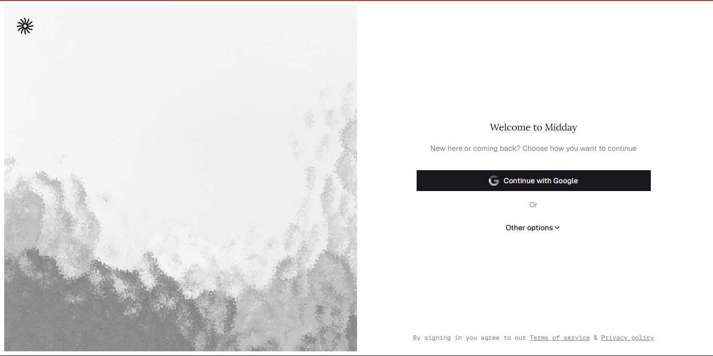
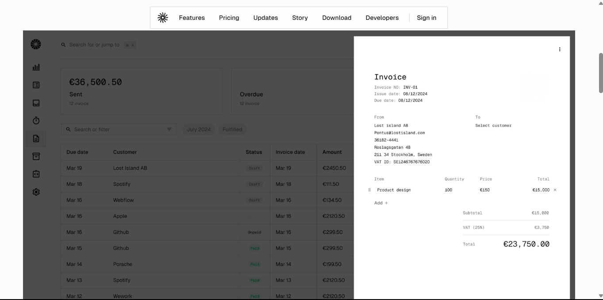
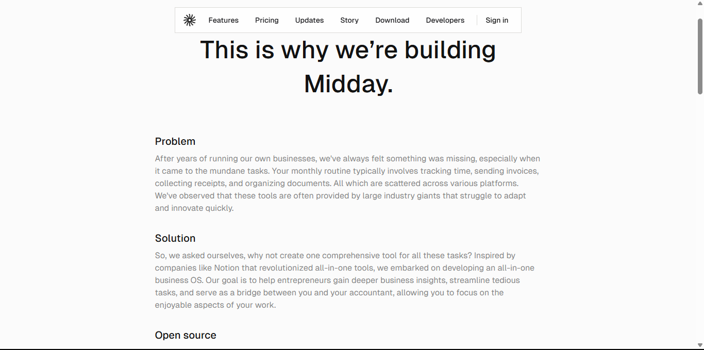
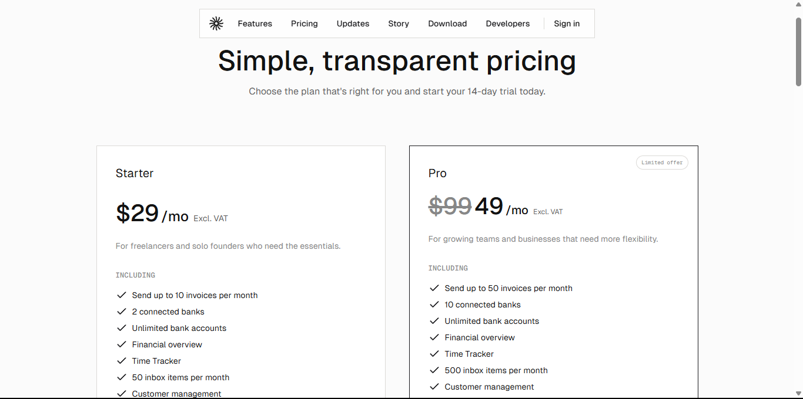

Overview
This is my front-end clone of Midday, a business tool for freelancers and small businesses. I built a clone of four of its pages, Home, Invoice, Story and Pricing, as a static interface using React and TypeScript. I made it with v0, Vercel's AI app builder, and deployed it on Vercel. It has no backend, so nothing is saved or sent.
Problem solved
Running a business involves big tasks such as tracking time and sending invoices, and these are usually scattered across different platforms. Midday brings them into one place. My clone recreates how that product presents this to its users. My own goal was to practise building and deploying a production-style interface quickly with an AI app builder.
Features
| FEATURE | STATUS |
|---|---|
| Home page | DONE |
| Invoice page | DONE |
| Story page | DONE |
| Pricing page | DONE |
| Backend and data storage | NOT INCLUDED |
Screenshots




Technologies used
TypeScript, React and HTML, generated with v0 (Vercel's AI app builder) and deployed on Vercel.
What I learned
- Using an AI app builder (v0) to produce a React and TypeScript interface from prompts
- Refining a generated design until it matches a real product
- Deploying a front-end project on Vercel
- The difference between a front-end UI and a full product: this clone is static, with no backend
Credit
Midday is created by the Midday team. This is a learning clone of its interface, not affiliated with them. Original: midday.ai.
← Back to all items